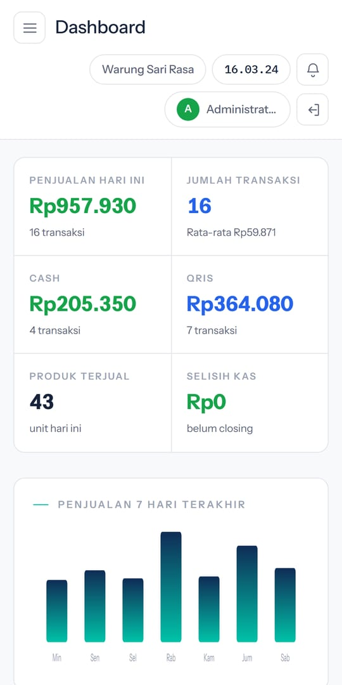
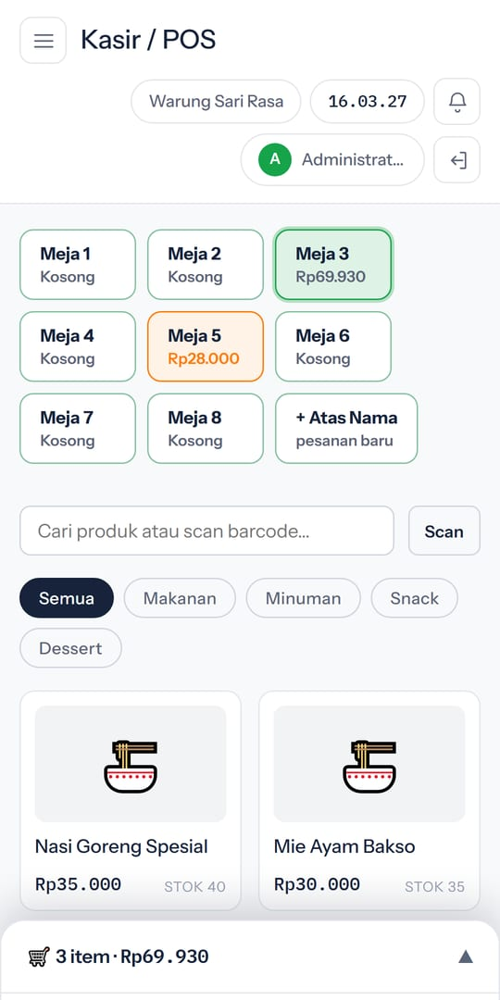
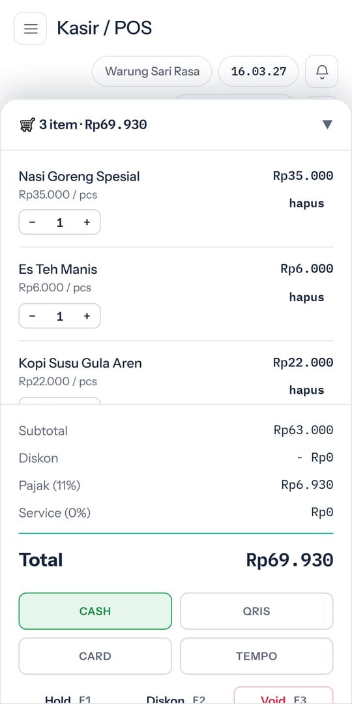
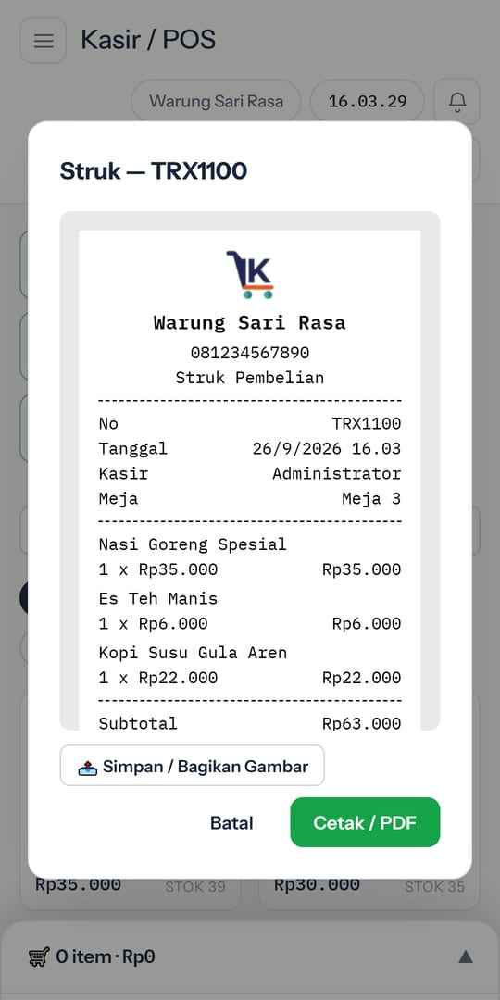
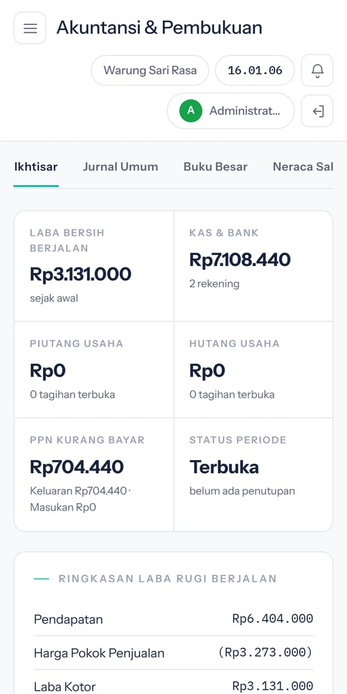
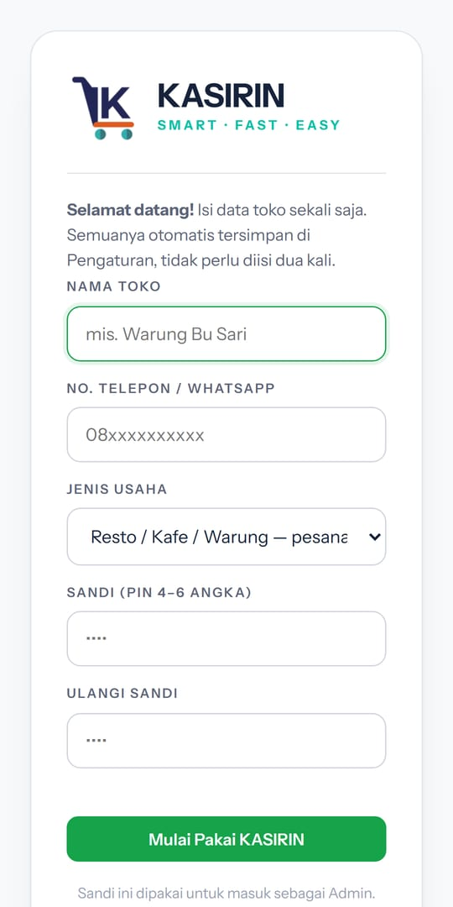

Catat penjualan, cetak struk, kelola stok, dan lihat laba rugi otomatis. Tetap jalan tanpa internet.
⬇ Download KASIRIN (Android)





iPhone tidak bisa memasang APK. Pakai versi web: buka tautan ini di Safari, ketuk tombol Bagikan, lalu pilih Tambah ke Layar Utama. Setelah itu KASIRIN tampil seperti aplikasi biasa.
Data utamanya tersimpan di HP kamu sendiri. Ada juga fitur opsional "Backup Otomatis ke Cloud" (aktif secara default, bisa dimatikan) yang menyimpan cadangan hariannya di server kami untuk jaga-jaga kalau HP hilang/rusak — lihat detailnya di Kebijakan Privasi. Backup manual di menu User & Setting tetap disarankan rutin.
Tidak untuk kasir dan pembukuan. Internet hanya dipakai untuk fitur tambahan seperti impor Excel dan membagikan struk sebagai gambar.
Di komputer bisa cetak ke printer apa saja yang terpasang (termasuk printer struk thermal USB). Di HP, tombol Cetak membuka dialog cetak Android — pilih printer Bluetooth kamu di sana kalau sudah dipasangkan/diinstal drivernya. Struk juga bisa dibagikan sebagai gambar ke WhatsApp kapan saja.
Ketuk "Lupa PIN?" di layar masuk dan isi kode pemulihan yang tampil saat pertama daftar.
Backup di HP lama, lalu Restore di HP baru lewat menu User & Setting.
Gratis bisa dicoba 7 hari dan ada tulisan promosi kecil di struk. PRO Rp99rb sekali bayar: tanpa batas waktu/transaksi dan struk bersih.
Versi gratis bisa dicoba 7 hari. PRO Rp99rb sekali bayar, tanpa batas waktu/transaksi. Hubungi WhatsApp 0897-7031-194.